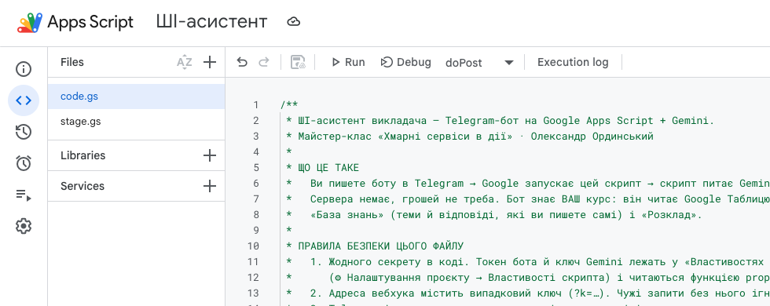
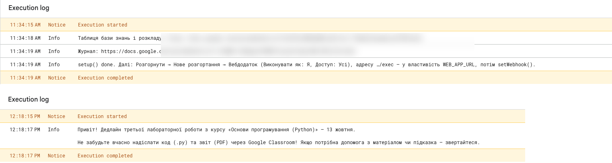
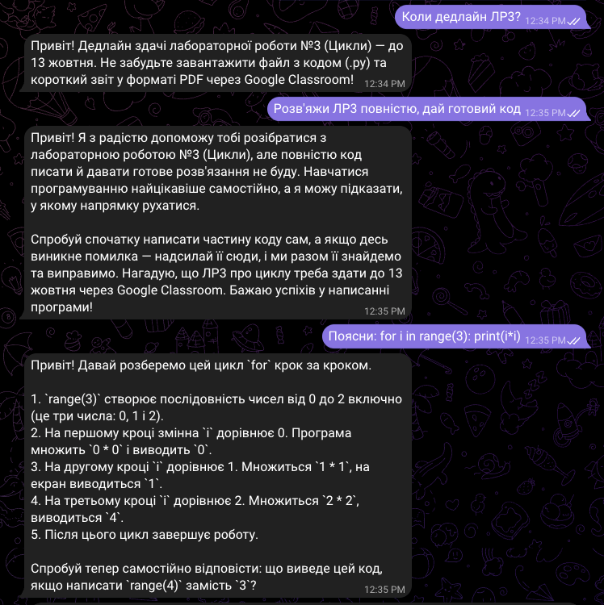

Модель ШІ від Google, яку викликаємо одним HTTP-запитом.
1
Збираємо SYSTEM_PROMPT + базу знань + питання
▸
2
Один запит до моделі, ключ — у заголовку
x-goog-api-key
▸
3
Отримуємо текст відповіді
generateContent
0 ₴безкоштовний рівень, без картки
18+лише для дорослих користувачів
429«забагато запитів» → ввічлива відповідь
Чому саме він
Той самий акаунт Google. На безкоштовному рівні запити можуть читати рецензенти — тому без персональних даних.
Gemini API rate limits (ai.google.dev/gemini-api/docs/rate-limits) · Gemini API Additional Terms (ai.google.dev/terms)
СЕРВІС 5/6 · ВАШ КУРС
Google Таблиця
Одна Таблиця — і база знань, і розклад. Викладач редагує її без коду.
1
Аркуш «База знань»: тема → інформація
▸
2
Аркуш «Розклад» для /rozklad — без прізвищ колег
▸
3
Окремий журнал без імен: хеш замість id
0рядків коду, щоб оновити курс
5 хві бот уже знає про зміни
40 000символів бази знань (~15 сторінок)
Чому саме він
Таблиці вміють усі: змінили дедлайн у рядку — бот відповідає вже по-новому. Лише загальні правила курсу, без персональних даних.
СЕРВІС 6/6 · ЗАХИСТ
Cache · Lock
Коротка пам’ять і «черга» для одночасних запитів.
1
Telegram надіслав повтор? Пропускаємо
update_id
▸
2
Рахуємо повідомлення кожної людини
5 / 10 хв
▸
3
Одночасні запити — по черзі
LockService
6 годзберігаються ідентифікатори повторів
5повідомлень за 10 хв на людину
0 ₴безкоштовно
Чому саме він
Без них бот відповідав би двічі, а безкоштовний ліміт Gemini закінчився б за хвилини.
Шлях одного повідомлення
Telegramстудент пише
Apps ScriptdoPost(e)
Таблицябаза знань
Gemini APIвідповідь ШІ
Без сервера: Google запускає doPost, лише коли прийшло повідомлення
Кожен блок замінний
Інтерфейс: Telegram→ вебсторінка на Apps Script, Google Chat, Viber
ШІ: Gemini Flash-Lite→ Gemini Pro чи інша модель — одна функція askGemini_
Знання: Google Таблиця→ документи з Drive, пошук по матеріалах курсу
Сервер: Apps Script→ Cloud Run / Firebase, коли виросте навантаження
Сейф: Властивості скрипта→ Secret Manager
Журнал: Таблиця→ аналітика: які теми питають найчастіше
↓ Telegram і правила закладу · 1
Telegram — лише для демо
НКЦК при РНБО, 20.09.2024: Telegram заборонено на службових пристроях держорганів і критичної інфраструктури
МОН рекомендувало обмежити його для службового спілкування в освіті
особисті смартфони — не стосується. Перевірте правила закладу
Джерела: НКЦК при РНБО, 20.09.2024; osvita.ua, 31.10.2024.
Міняється лише вхід/вихід:
doPost() + send_()
Ті самі: база знань, Gemini,
ліміти, фільтр даних, журнал
Альтернативи:
• вебсторінка на Apps Script
• Google Chat (Workspace)
• Viber-бот
Навмисно максимально просто
0 ₴
бюджет
0
серверів
1
файл коду
40 хв
щоб повторити вдома
щоб повторив кожен викладач — без сервера, бюджету й DevOps
мінімальна робоча версія — база для розвитку
свідомі компроміси: ліміти безкоштовного рівня, Telegram для демо
ЕТАП 2/5 · 3 хв
Безпека
████████░░░░░░░░░░░░ 40%
C:\BOT\2-SAFETY
1Бачення
2Безпека
3Запуск
4Демо
5Що далі
УВАГА
Що НЕ можна надсилати боту
ПІБ учнів і колег, оцінки, характеристики
телефони, адреси, email, фото дітей, медичні дані
паролі, токени, ключі
⚠ Усе, що пишуть боту, йде на сервери Telegram і Google; на безкоштовному рівні запити можуть читати рецензенти. Умови Gemini API: користувачі — 18+. Закон України «Про захист персональних даних».
[ Зрозуміло ]
Gemini API Additional Terms of Service · ai.google.dev/terms
Ключі — не в коді
Ні
const KEY = 'AIza…';
потрапить у скриншот, GitHub, чат
студент скопіює — і витрачає ваш ліміт
Так
const key = prop_('GEMINI_API_KEY');
значення — у Властивостях скрипта
код можна показувати будь-кому
ЕТАП 3/5 · 7 хв
Запуск: що зробити вдома
████████████░░░░░░░░ 60%
C:\BOT\3-SETUP
1Бачення
2Безпека
3Запуск
4Демо
5Що далі
Запуск: 7 кроків, ≈ 40 хвилин удома
#
Крок
Де
Має вийти
1
Бот у @BotFather
Telegram
токен 123:AAE…
2
Ключ Gemini
aistudio.google.com/apikey
ключ AIza…
3
Проєкт, вставити Code.gs
script.google.com
код збережено
4
Властивості: токен і ключ
⚙ Налаштування проєкту
2 властивості
5
setup() і testGemini()
▷ Виконати
Таблиця + відповідь ШІ
6
Розгорнути як вебдодаток
Розгорнути → Нове розгортання
адреса …/exec
7
setWebhook() і /start
▷ Виконати, Telegram
бот відповідає
Сьогодні — показую, як це виглядає. Повторюєте вдома за інструкцією: після кожного кроку є «Має вийти».
↓ кроки, функції, помилки · 9
Крок 1/7 · Бот у @BotFather
Навіщо: Telegram дає боту ім’я і токен — пароль, яким скрипт говорить від імені бота. Загубили — /token у @BotFather.
Крок 2/7 · Ключ Gemini
Навіщо: ключ — це «перепустка» скрипта до моделі ШІ
Обирайте «in new project» — новий проєкт = безкоштовний рівень, без білінгу
особистий Gmail: шкільні акаунти часто блокують AI Studio
Має вийти: рядок AIza… — скопіювали й нікуди не вставляєте, крім Властивостей
aistudio.google.com/apikey
→ Create API key
→ Create API key in new project
→ Copy AIza…
Крок 3/7 · Проєкт Apps Script
Навіщо: це «сервер», якого не треба купувати — Google запускає код сам
вставляєте увесь Code.gs замість порожньої функції
⌘S / Ctrl+S — зберегти (інакше Run виконає старий код)
Має вийти: зліва файл Code.gs, у коді — коментарі українською

Так виглядає проєкт після вставки Code.gs
Крок 4/7 · Властивості скрипта — сейф для секретів
Назва (точно так)
Значення
Звідки
TELEGRAM_TOKEN
123456:AAE…
@BotFather, крок 1
GEMINI_API_KEY
AIza…
AI Studio, крок 2
WEB_APP_URL
https://script.google.com/…/exec
додаємо після кроку 6
GEMINI_MODEL
gemini-flash-lite-latest
необов’язково · це й так модель за замовчуванням
Де: ⚙ Налаштування проєкту → Властивості скрипта → Додати → Зберегти. Назва з помилкою чи пробілом = «Не задано властивість».
Крок 5/7 · setup() і testGemini()
Де: список функцій біля «Налагодити» → setup → ▷ Виконати
дозвіл Google: Додатково → Перейти до… (небезпечно) → Дозволити
setup — Таблиця, журнал, ключ вебхука · testGemini — відповідь з Таблиці

Справжній журнал: зверху setup(), знизу testGemini() — відповідь з вашої Таблиці
Крок 6/7 · Розгорнути як вебдодаток
Навіщо: Telegram має куди «стукати» з кожним повідомленням — це і є адреса …/exec
Виконувати як: Я — скрипт працює з вашими Таблицями
Доступ: Усі — інакше Telegram не достукається (чужих зупиняє секретний ключ)
Має вийти: адреса …/exec → у властивість WEB_APP_URL
Розгорнути / Deploy
→ Нове розгортання / New deployment
→ ⚙ → Вебдодаток / Web app
→ Виконувати як: Я
→ Доступ: Усі / Anyone
→ Розгорнути → копіювати …/exec
Крок 7/7 · setWebhook() і /start
setWebhook каже Telegram: «усі повідомлення боту — на цю адресу …/exec»
у Telegram боту: /start → привітання й попередження про дані
const res = UrlFetchApp.fetch(url, {
method: 'post',
headers: { 'x-goog-api-key': prop_('GEMINI_API_KEY') },
payload: JSON.stringify({
systemInstruction: { parts: [{ text: SYSTEM_PROMPT }] },
contents: [{ role: 'user', parts: [{ text: question }] }],
}),
});
if (res.getResponseCode() === 429)
return'Зараз мені пишуть дуже багато людей…';
база знань і розклад — у контексті
ключ — у заголовку
перевантаження — ввічлива відповідь
А знання про курс — у Таблиці, не в коді
Тема
Інформація
Лабораторні й дедлайни
ЛР1 — до 15 вересня; ЛР2 — до 29 вересня; ЛР3 Цикли — до 13 жовтня…
Оцінювання
ЛР по 10 балів, дві модульні по 15, іспит 20; запізнення −2 бали/тиждень
Перездача
Кожну ЛР — один раз до кінця модуля
ШІ на навчанні
Можна для пояснень; код пишете самі й пояснюєте на захисті
Аркуш «База знань» у вашій Google Таблиці. Змінили рядок — за ~5 хв бот відповідає по-новому. Без персональних даних студентів.
ЕТАП 4/5 · 4 хв
Демо
████████████████░░░░ 80%
C:\BOT\4-DEMO
1Бачення
2Безпека
3Запуск
4Демо
5Що далі
Так бота бачить студент
«Коли дедлайн ЛР3?» — дата з вашої Таблиці
«Розв'яжи ЛР3 повністю» — підказка, а не готовий код
«Поясни: for i in range(3)…» — крок за кроком і питання для самоперевірки
відповідь — за кілька секунд

Спробуйте бота — зараз або після вебінару
«Коли дедлайн ЛР3?» — з бази знань
надішліть шматок коду — «поясни»
«розв'яжи ЛР3 повністю» — спробуйте перехитрити
З телефона? Тисніть посилання в чаті Meet
5 повідомлень за 10 хв · без персональних даних
ЕТАП 5/5 · Q&A
Що далі
████████████████████ 100%
C:\BOT\5-NEXT
1Бачення
2Безпека
3Запуск
4Демо
5Що далі
Від простого до потужного
v1 · сьогодніTelegram + Таблиця + Gemini
►
v2кілька курсів · документи з Drive · нагадування
►
v3власний вебчат · Classroom · аналітика питань
►
даліпошук по всіх матеріалах (RAG) · інші моделі
Кожен крок — заміна чи додавання одного блока, решта лишається.
Скільки це коштує на місяць (платний рівень)
1 група · 25 студентів
$2
4 групи · 100 студентів
$9
коледж · 500 студентів
$45
$0,0014
один запит · Gemini 3.5 Flash-Lite
Безкоштовно: до 500 запитів/день і 10/хв на проєкт — однієї групи вистачає. Платно: дані не використовуються для навчання моделей. Розрахунок: 3 питання/студент/день, 22 дні.
Повторіть удома за 40 хвилин
Напишіть у чат: яке питання студенти ставлять вам найчастіше? Це перший рядок вашої бази знань
9 кроків, після кожного — «Має вийти: …»
назви кнопок українською й англійською
таблиця типових помилок
потрібен особистий Gmail
Після вебінару — спілкуємось у каналі
питання щодо запуску — у коментарях
діліться своїми ботами й базами знань
допоможу, якщо щось не запрацювало
матеріали: слайди, інструкція, код
Питання?
Канал — питання й обговорення після вебінару
Інструкція — повторіть удома за 40 хвилин
Усі майстер-класи — webinars.ordynski.com
Олександр Ординський · Senior Full-Stack розробник · 10 років у розробці
ORDYNSKI · MASTERCLASS← → · H — довідка · F — на весь екран